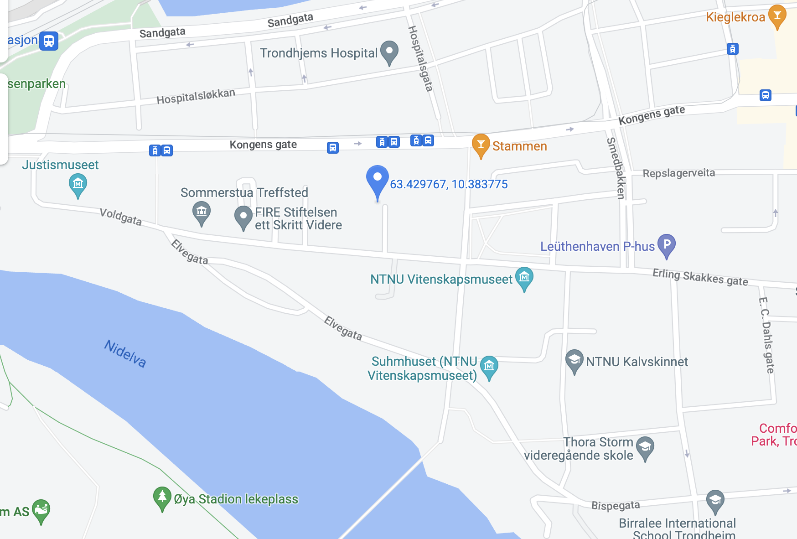

Visit
Location
he museum is located at 123 museumroad
Admission
The entrance is free for all. There are guided tours of the museum that leave every hour. These tours are 70 NOK per person and include a handy printed guide of the museum. If you would like to organise a guided tour for your group of 6 or more people, please contact us to arrange the tour.
Hours
Monday: Closed Tuesday: 10:00 – 16:00 Wednesday: 10:00 – 16:00 Thursday: 10:00 – 16:00 Friday: 10:00 – 19:00 Saturday: 9:00 – 16:00 Sunday: 9:00 – 13:00
Accessibility
The museum has wheelchair accessibility ramps. It also has audio guides and braille display signs for the visually impaired.
Food and drink
There is a café attached to the museum where you can get light lunches, soft drinks, coffee, snacks and more.
Shop
Our shop offers a range of memorabilia from the museum as well as great gifts and activity packs that allow you to continue to explore science even after you’ve left the museum.